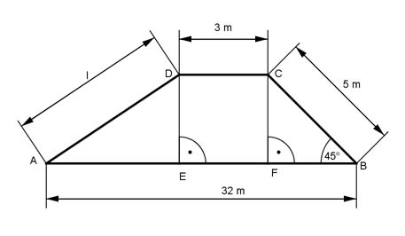

Pythagoras Aufgabe 73 Ein Damm hat den dargestellten Querschnitt. Berechnen Sie die Länge l der Böschung in m.  Der Winkel bei C = 180° - 90° - 45° = 45° --> Das Dreieck FBC ist gleichschenklig --> FC = FB = h Satz von Pythagoras im Dreieck FBC: BC² = h² + h² 5² = 2h² 2h² = 25 |:2 h² = 12,5 m² |√ h = 3,5 m Satz von Pythagoras im Dreieck AED: AE = AB + FD – EF = 32 m – 3,5 m – 3 m = 25,5 m AD² = l² = AE² + ED² l² = 25,5² m² + 3,5² m² = 662,5 m² |√ l = 25,7 m